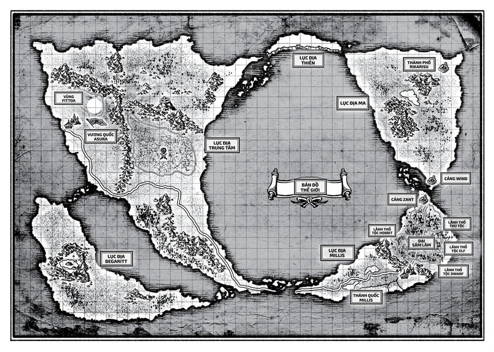

Bản đồ thế giới Mushoku Tensei
Lục địa Trung Tâm
Lục địa Trung Tâm nằm ở phía tây của Biển Nhẫn, đây là lục địa lớn nhất thế giới. Phía đông bắc tiếp giáp Lục địa Thiên, phía tây nam tiếp giáp Lục địa Begaritt, phía đông nam tiếp giáp Lục địa Millis. Dãy núi Xích Long chia lục địa làm ba phần: miền bắc, miền tây và miền nam. Dân cư sinh sống tại lục địa Trung Tâm chủ yếu là loài người. Tiếng loài người là ngôn ngữ chủ đạo.
Miền Bắc
- Vương quốc Ranoa: Một trong ba Đại quốc Ma pháp bên cạnh công quốc Neris và công quốc Basherant. Ranoa Là quốc gia tự trị có lãnh thổ lớn nhất phía bắc. Tại Thành phố Ma pháp Sharia – vương đô của Ranoa – có Đại học Ma pháp Ranoa nổi tiếng, nơi sản sinh ra nhiều pháp sư tài ba.
- Công quốc Neris: Một trong ba Đại quốc Ma pháp. Nổi tiếng trong việc chế tạo công cụ ma pháp.
- Công quốc Basherant: Một trong ba Đại quốc Ma pháp. Nổi tiếng trong việc nghiên cứu ma pháp.
Miền Tây
- Vương quốc Asura: nằm ở phía tây lục địa Trung Tâm là quốc gia thịnh vượng và giàu có nhất thế giới. Vương đô Arus – được đặt theo tên của vị anh hùng loài người – là thành phố lớn và đông dân nhất thế giới. Nguồn tài nguyên thiên nhiên dồi dào và số lượng quái vật sinh sống ít đã biến Vương quốc Asura thành nơi sinh sống lý tưởng của con người. Dẫu vậy, Asura không phải là nơi thích hợp cho các mạo hiểm giả kiếm sống, bởi vương quốc sẽ thường xuyên điều động hiệp sĩ đi tiêu diệt quái vật gần thị trấn và thôn làng. Do đó Hội Mạo Hiểm không có nhiều yêu cầu tương tự.
Miền Nam
- Vương quốc Vương Long: quốc gia có lãnh thổ lớn thứ ba thế giới và có lớn nhất miền nam lục địa Trung Tâm với bốn nước chư hầu.
- Vương quốc Shirone: một quốc gia tuy nhỏ nhưng có lịch sử lâu đời. Thủ đô của Shirone là Latakia.
- Vương quốc Sanakia: một trong ba nước chư hầu của Vương quốc Vương Long.
- Vương quốc Kikka: một trong ba nước chư hầu của Vương quốc Vương Long.
- Vùng tranh chấp: nằm ở phía bắc của miền Nam, tập hợp nhiều quốc gia nhỏ.
Lục địa Millis
Lục địa Millis nằm ở phía đông nam của Biển Nhẫn. Phía tây tiếp giáp cực nam Lục địa Trung Tâm, phía bắc tiếp giáp cực nam Lục địa Ma. Dãy núi Thanh Long chia lục địa Millis làm hai miền, Đại Sâm Lâm ở phía bắc, Thánh quốc Millis ở phía nam. Xuyên qua lục địa là xa lộ Thánh Kiếm. Loài người sinh sống chủ yếu ở các đồng bằng miền nam lục địa. Các loài thú tộc, elf, dwaft và hobbit sinh sống trong Đại Sâm Lâm ở phía bắc lục địa. Dân số loài người và thú tộc xấp xỉ nhau. Ngôn ngữ được sử dụng tại lục địa Millis là tiếng loài người và tiếng Thú Thần.
Thánh quốc Millis
- Thánh quốc Millis là quốc gia mạnh thứ hai thế giới, chỉ sau Vương quốc Asura. Đây là thánh địa của Giáo phái Millis, tôn giáo lớn nhất thế giới. Đây cũng là nơi đặt trụ sở chính của Hội Mạo Hiểm. Ma tộc ở đây bị kỳ thị nặng nề.
- Millishion, vương đô của Thánh quốc Millis được mệnh danh là thành phố đẹp nhất thế giới.
Đại Sâm Lâm
- Đại Sâm Lâm là một khu rừng rậm chiếm hầu hết miền bắc lục địa. Đây là chốn cư ngụ của vô số giống loài động vật và nhiều chủng tộc khác nhau. Thú tộc sống tại phía bắc, dwarf phía nam, hobbit phía tây và elf phía đông.
- Mùa mưa hằng năm tại đây kéo dài ba tháng khiến cả khu rừng bị lụt, giao thông phong tỏa.
Xa lộ Thánh Kiếm
Một con đường xuyên lục địa được cho là do đường kiếm của Thánh Millis tạo ra. Xa lộ kéo dài từ cảng Tây, cắt ngang dãy núi Thanh Long, chia đôi Đại Sâm Lâm và kết thúc tại cảng Zant ở cực bắc lục địa. Thánh lực Millis vẫn còn vương lại trên con đường, nên cho dù Đại Sâm Lâm ngập nặng trong mùa mưa thì con đường vẫn hoàn toàn khô ráo. Không có quái vật nào dám đặt chân lên xa lộ.
Càng Tây
Hải cảng nằm ở cực tây của lục địa. Tuyến hàng hải kết nối cảng Đông của Lục địa Trung Tâm.
Cảng Zant
Hải cảng nằm ở cực bắc của lục địa. Tuyến hàng hải kết nối cảng Wind của Lục địa Ma.
Lục địa Ma
Lục địa Ma là đại lục địa ở phía đông bắc của Biển Nhẫn, phía tây bắc lục địa Ma giáp cực đông Lục địa Thiên, phía nam giáp cực bắc Lục địa Millis. Toàn bộ đại lục địa là một vùng đất cằn cỗi có nồng độ ma lực cao, địa hình trập trùng và hiểm trở với những mỏm đá và phiến đá khổng lồ lô nhô trên mặt đất, tựa như mê cung tự nhiên. Đường xá và lối đi không tồn tại.
Hầu hết dân cư tại lục địa Ma là Ma tộc. Các chủng tộc khác như loài người, thú tộc, hải tộc thường qua lại tại các thị trấn cảng. Ngôn ngữ sử dụng tại lục địa Ma là tiếng Ma Thần.
Vùng Biegoya
Vùng đất do ma vương Badigadi cai trị.
- Thị trấn Rikarisu: còn được gọi là cựu thành trì Kishirisu, thị trấn nằm trong một cái hố khổng lồ trông như miệng núi lửa. Rikarisu là một trong ba khu dân cư lớn nhất lục địa. Nơi đây là trụ sở quân đội của Ma Giới Đại Đế Kishirika Kishirisu trong các cuộc đại chiến Nhân–Ma hàng ngàn năm trước.
Lục địa Begaritt
Lục địa Begaritt là một lục địa ở phía Tây Nam có rất nhiều mê cung nguy hiểm, tập trung nhiều mana. Do môi trường khắc nghiệt và số lượng quái vật sinh ra nên lục địa này nên được cho là nguy hiểm thứ hai thế giới sau Lục địa Ma.
Thành phố mê cung Rapan
Thành phố nổi tiếng nhất của Lục địa Bergraritt được xây trong xương của quái vật khổng lồ Behemoth, các tòa nhà chủ yếu được làm bằng đất và vật liệu quái vật
Mê cung dịch chuyển
Một mê cung hạng S , nằm trong một hang động gần thành phố Rapan
Cảng biển
Lục địa có 2 cảng , một cái nằm ở Phía Tây thông với Lục địa Trung Tâm trong vương quốc Asura , và cảng kia được thông với Phía Nam của Lục địa Trung Tâm trong vương quốc Vương Long
Lục Địa Thiên
Lục Địa Thiên là một lục địa nhỏ nằm ở phía Bắc nối với Lục Địa Trung Tâm . Là nơi cho chủng tộc Thiên sinh sống
Hell
Một trong ba mê cung vĩ đại nhất trên thế giới . Đây là nơi Vua Vita lẫn tránh Laxus
Artier
Một thị trấn của Thiên Tộc được bảo vệ bởi kết giới . Long Vương Perugius có quen một vài người dân trong thị trấn ở đây
Biển Nhẫn
Biển Nhẫn là biển lớn bao quanh bởi 4 đại lục địa: Lục địa Trung Tâm ở phía tây, Lục địa Ma ở phía đông bắc, Lục địa Millis ở phía đông nam và Lục địa Thiên ở phía bắc. Biển Nhẫn xuất hiện vào cuối đại chiến Nhân–Ma lần thứ hai, khi Siêu Lục Địa bị chia làm hai, hình thành Lục địa Trung Tâm và Lục địa Ma.
Biển Nhẫn là nơi sinh sống của hải tộc. Cư dân dưới biển nói ngôn ngữ Hải Thần.